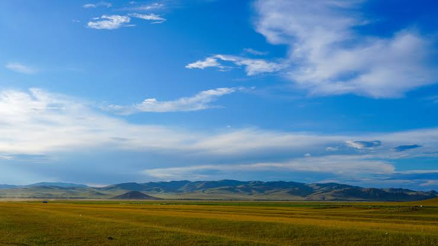
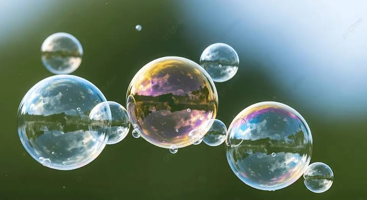

The Land
Land is an important part of Earth where people, animals, and plants live. It provides space for homes, farms, forests, and industries. Healthy land supports agriculture, wildlife, and natural resources. Protecting land from pollution and deforestation helps maintain a clean environment and ensures a better future for everyone. Land is also the source of many valuable resources such as minerals, coal, and fertile soil. Farmers grow crops on land that provide food for millions of people around the world. Forests on land produce oxygen, regulate the climate, and provide habitats for countless species. Unfortunately, human activities such as illegal logging, excessive construction, and improper waste disposal are damaging our land. We can protect it by planting more trees, reducing plastic waste, recycling materials, and using land responsibly. Everyone has a role in preserving land because healthy land supports life, protects biodiversity, and contributes to a cleaner and more sustainable environment for future generations.

The Water
Water is essential for all living things. It is used for drinking, cooking, farming, and cleaning. Rivers, lakes, and oceans are home to many plants and animals. Conserving water and keeping it free from pollution are important responsibilities that help protect life and ensure enough clean water for future generations. Water covers about 71% of the Earth's surface and plays a vital role in maintaining life. It helps plants grow, supports industries, and is used to generate hydroelectric power. Clean water is necessary for good health and proper sanitation. However, pollution from factories, plastic waste, and chemicals threatens rivers and oceans. Climate change also affects water supplies by causing droughts and floods in many regions. People can help conserve water by fixing leaks, turning off taps when not in use, collecting rainwater, and avoiding unnecessary waste. Protecting water resources ensures that people, animals, and plants continue to have access to safe and clean water for many years to come.

The Air
Air is a vital resource that all living organisms need to survive. It provides oxygen for breathing and supports life on Earth. Clean air promotes good health and a safe environment. Reducing pollution by planting trees and limiting harmful emissions helps keep the air fresh and healthy for everyone. Air is made up mainly of nitrogen and oxygen, along with small amounts of other gases that are essential for maintaining Earth's atmosphere. It regulates temperature, supports weather patterns, and allows birds and aircraft to fly. Unfortunately, pollution from vehicles, factories, and burning fossil fuels releases harmful gases that reduce air quality and contribute to global warming. Poor air quality can lead to respiratory diseases and other health problems. Everyone can help improve air quality by using public transportation, cycling, planting trees, conserving energy, and reducing the use of fossil fuels. By protecting the air, we create a healthier environment, reduce the effects of climate change, and ensure a better quality of life for both present and future generations.